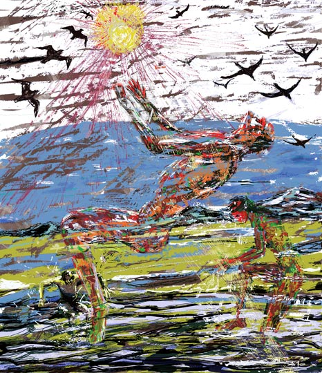

Myriam Lozada-Jarvis
Drawn and Painted Art
 |
There are 16 images in this exhibit.


Myriam Lozada-Jarvis received a BFA degree in painting and mixed media from the School of Visual Arts, New York, in 1981, and an MFA from Hunter College, New York, in 1984. Her training and early work were in traditional art but the advent of the computer brought her a new, fresh, different and vital means of expression. She uses various techniques, but her art is mostly drawn and painted. She writes, "I record bits and pieces of my life process and incorporate taste, smell and sensual pleasure in my work...It is no longer just painting, drawing, printmaking or photography, but all of these together, in a profoundly deep expression that is relevant to our time and increasingly interconnected world." She lives in Las Cruces, New Mexico, with her husband the artist and critic, JD Jarvis. Her prints, paintings and sculptures have been exhibited widely. This exhibit of 16 images comprises work created in 2008 and earlier.